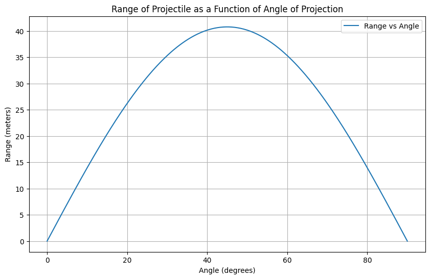

Investigating the Range as a Function of the Angle of Projection
Motivation:
Projectile motion, while seemingly simple, offers a rich playground for exploring fundamental principles of physics. The problem is straightforward: analyze how the range of a projectile depends on its angle of projection. Yet, beneath this simplicity lies a complex and versatile framework. The equations governing projectile motion involve both linear and quadratic relationships, making them accessible yet deeply insightful.
What makes this topic particularly compelling is the number of free parameters involved in these equations, such as initial velocity, gravitational acceleration, and launch height. These parameters give rise to a diverse set of solutions that can describe a wide array of real-world phenomena, from the arc of a soccer ball to the trajectory of a rocket.
Task:
1. Theoretical Foundation:
Governing Equations of Motion:
The basic equations governing projectile motion are derived from Newton's laws and can be expressed as two separate components: one for horizontal motion (no acceleration in the x-direction) and one for vertical motion (subject to gravitational acceleration).
Horizontal motion (x-direction):
$$ x(t) = v_0 \cos(\theta) t $$ Where: - \(x(t)\) is the horizontal distance at time \(t\), - \(v_0\) is the initial velocity, - \(\theta\) is the angle of projection.
Vertical motion (y-direction):
$$ y(t) = v_0 \sin(\theta) t - \frac{1}{2} g t^2 $$ Where: - \(y(t)\) is the vertical distance at time \(t\), - \(g\) is the acceleration due to gravity.
Time of flight:
To find the range, we need to determine the time it takes for the projectile to hit the ground (i.e., when \(y(t) = 0\)). Setting \(y(t) = 0\) and solving for \(t\) gives:
$$ t = \frac{2v_0 \sin(\theta)}{g} $$ This is the total time of flight.
Range (R):
The horizontal range is found by substituting the time of flight into the equation for horizontal motion:
2. Analysis of the Range:
The equation for range is:
Key Points:
- Angle dependence: The range is a function of \(\sin(2\theta)\), which reaches its maximum value when \(2\theta = 90^\circ\), or \(\theta = 45^\circ\). Therefore, the optimal angle for maximum range is 45 degrees.
- Initial velocity dependence: The range increases with the square of the initial velocity, i.e., higher initial velocity leads to a larger range.
- Gravitational acceleration dependence: The range is inversely proportional to the gravitational acceleration. In regions with lower gravity (like the Moon), the range would be much larger for the same initial velocity.
Impact of other parameters:
- Launch height: If the projectile is launched from a height \(h\), the time of flight and the range will be slightly modified. This would lead to an extra term in the equations to account for the height difference.
- Air resistance: In real-life scenarios, air resistance would slow down the projectile, making the range less than the idealized calculation.
3. Practical Applications:
- Uneven terrain: If the projectile is launched on uneven terrain, we would need to consider the angle of launch relative to the surface, adjusting the equations accordingly.
- Air resistance: To simulate air resistance, you would need to add a drag force term that is proportional to the square of the velocity.
4. Implementation:
Now, let's implement a Python script to simulate projectile motion and visualize the range as a function of the angle of projection. 
Python Code (for the idealized case):
import numpy as np
import matplotlib.pyplot as plt
# Constants
g = 9.81 # Acceleration due to gravity (m/s^2)
# Initial conditions
v0 = 20 # Initial velocity (m/s)
# Function to calculate range as a function of angle
def range_of_projectile(v0, theta):
return (v0**2 * np.sin(2 * np.radians(theta))) / g
# Angles from 0 to 90 degrees
angles = np.linspace(0, 90, 500)
# Calculate the range for each angle
ranges = range_of_projectile(v0, angles)
# Plot the results
plt.figure(figsize=(10, 6))
plt.plot(angles, ranges, label="Range vs Angle")
plt.title("Range of Projectile as a Function of Angle of Projection")
plt.xlabel("Angle (degrees)")
plt.ylabel("Range (meters)")
plt.grid(True)
plt.legend()
plt.show()